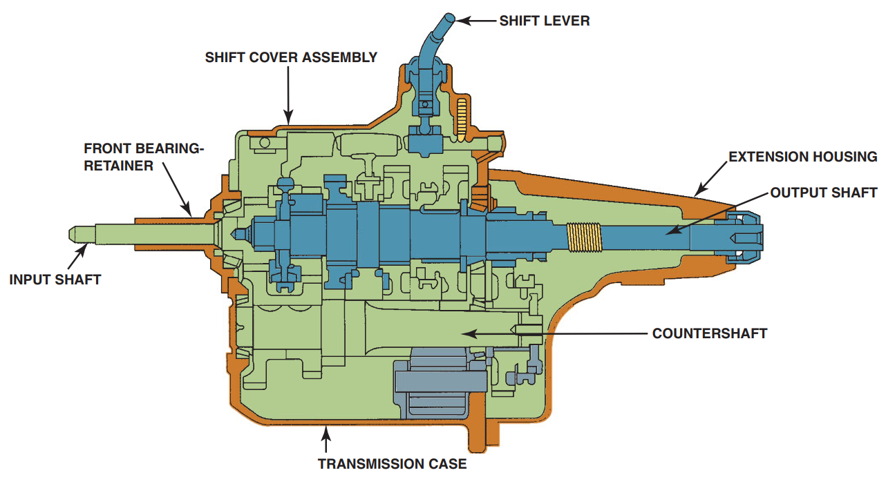
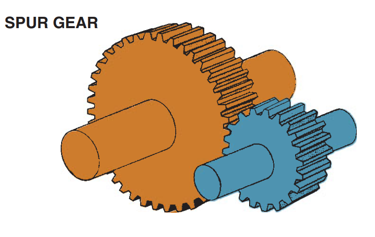
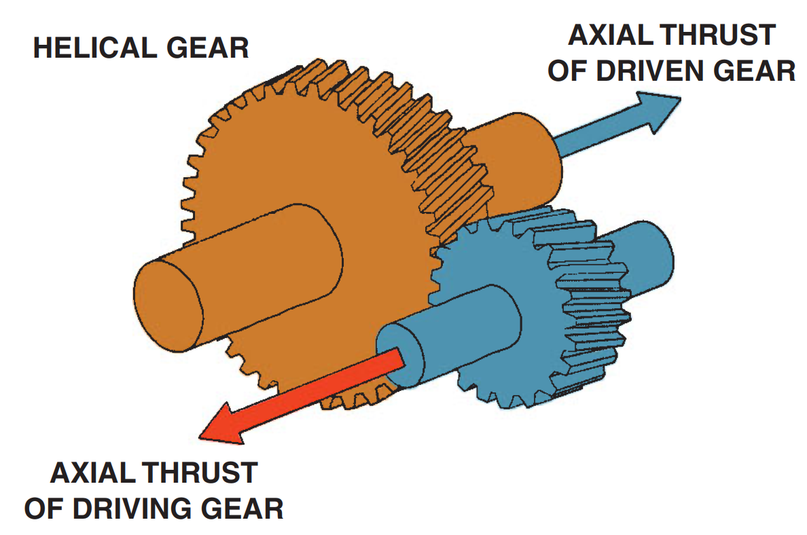
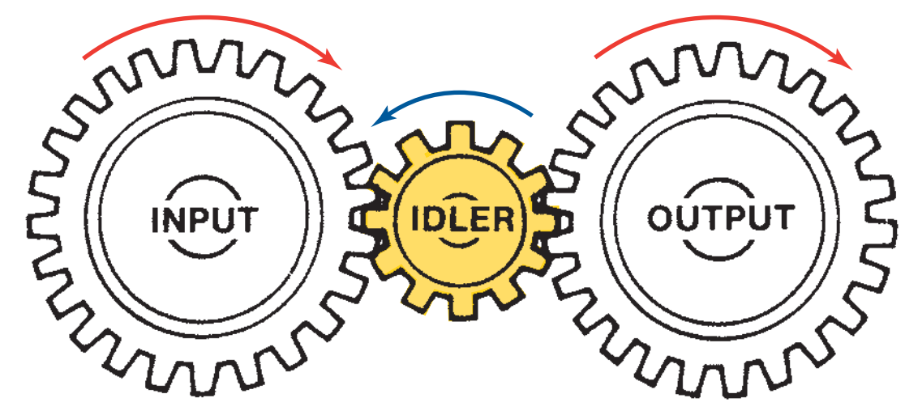
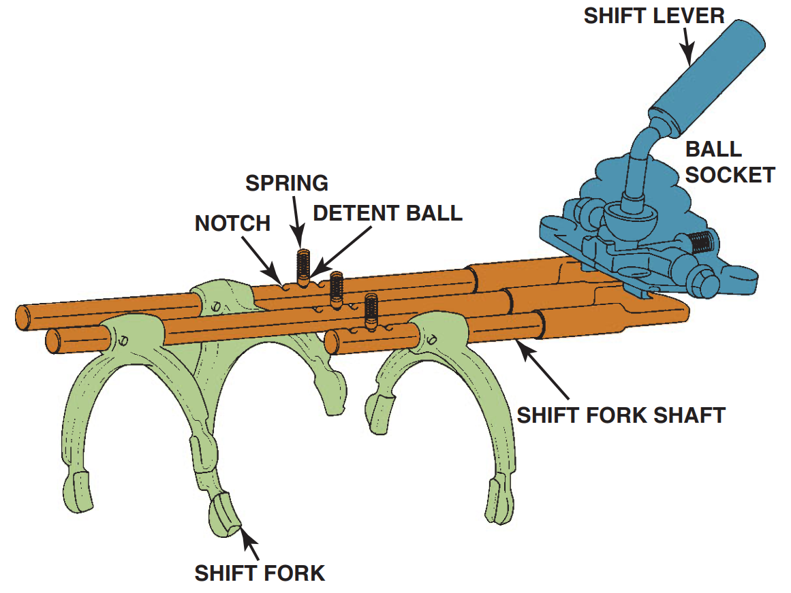
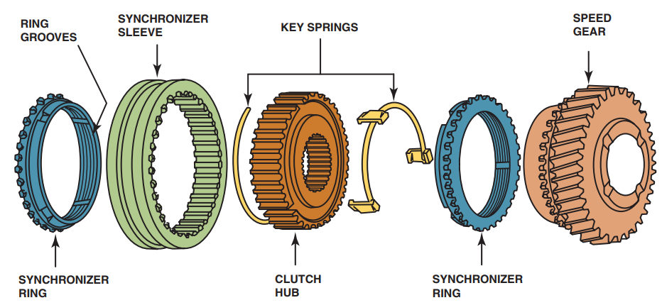

A vehicle requires a lot of torque to start off and to climb hills, yet it does not require as much torque to move on level ground. The source of the torque is the engine. Torque is a twisting or turning force that is exerted on the input shaft of a transmission. An engine produces increasing torque as its speed increases up to a certain point where the torque output starts to decrease. Therefore, to get a vehicle moving or to accelerate up a hill, it is desirable to use a transmission that allows the engine speed to be increased even though the vehicle speed may be low. Using gears allows the engine speed to increase at low vehicle speeds yet still permits the engine speed to drop at higher speeds to save fuel and reduce exhaust emissions.
TRANSMISSION CONSTRUCTION

Figure 7.2. Cross section of a five-speed manual transmission showing the main parts
A transmission is usually constructed of cast aluminum machined to accept the internal parts and strong enough to be a structural member of the drive train.
The input shaft is splined to the clutch disc and is also referred to as the main gear, clutch gear, or main drive pinion assembly. The main shaft, also called the output shaft, is splined at the end and transmits engine torque to the drive shaft (propeller shaft) through a yoke and universal shaft. All manual transmissions use a countershaft (also called a lay shaft or cluster shaft) to provide the other set of gears necessary to achieve the changes in gear ratios. The gears on the countershaft are called cluster gears or counter gears.
GEARS
The purpose of the gears in a manual transmission is to transmit rotating motion. Gears are normally mounted on a shaft, and they transmit rotating motion from one parallel shaft to another.
Gears and shafts can interact in one of three ways: the shaft can drive the gear; the gear can drive the shaft; or the gear can be free to turn on the shaft. In this last case, the gear acts as an idler gear.
The spur gear is the simplest gear design used in manual transmissions. As shown in Figure 7.3, spur gear teeth are cut straight across the edge parallel to the gear’s shaft. During operation, meshed spur gears have only one tooth in full contact at a time.

Figure 7.3. Spur gears
Its straight tooth design is the spur gear’s main advantage. It minimizes the chances of popping out of gear, an important consideration during acceleration/deceleration and reverse operation. For this reason, spur gears are often used for the reverse gear.
The spur gear’s major drawback is the clicking noise that occurs as teeth contact one another. At higher speeds, this clicking becomes a constant whine. Quieter gears, such as the helical design, are often used to eliminate this gear whine problem.

Figure 7.4. Helical gears
A helical gear has teeth that are cut at an angle or are spiral to the gear’s axis of rotation (Figure 7.4). This configuration allows two or more teeth to mesh at the same time, which distributes tooth load and produces a very strong gear. Helical gears also run more quietly than spur gears because they create a wiping action as they engage and disengage the teeth on another gear. One disadvantage is that helical teeth on a gear cause the gear to move fore or aft (axial thrust) on a shaft, depending on the direction of the angle of the gear teeth. This axial thrust must be absorbed by thrust washers and other transmission gears, shafts, or the transmission case.
Helical gears can be either righthanded or lefthanded, depending on the direction the spiral appears to go when the gear is viewed face-on. When mounted on parallel shafts, one helical gear must be righthanded and the other lefthanded. Two gears with the same direction spiral do not mesh in a parallel mounted arrangement.
An idler gear is a gear that is placed between a drive gear and a driven gear. Its purpose is to transfer motion from the drive gear to the driven gear without changing the direction of rotation. It can do this because all three gears have external teeth (Figure 7.5).
Idler gears are used in reverse gear trains to change the directional rotation of the output shaft. In all forward gears, the input shaft and the output shaft turn in the same direction. In reverse, the output shaft turns in the opposite direction as the input shaft. This allows the vehicle drive wheels to turn backward.

Figure 7.5. An idler gear is used to transfer motion
GEARSHIFT MECHANISMS
Gear selection mechanisms can be of the remote (indirect) or the direct control type. Indirect mechanisms can be floor mounted, dashboard mounted or located on the steering column
Figure 7.6 illustrates a typical transmission shift linkage for a five-speed transmission. As you can see, there are three separate shift rails and forks. Each shift rail/shift fork is used to control the movement of a synchronizer, and each synchronizer is capable of engaging and locking two speed gears to the mainshaft. The shift rails transfer motion from the driver-controlled gearshift lever to the shift forks.
The shifting lever either moves cables that transfer the shifting motion to the transmission or move the shift forks directly. Inside the transmission are shift forks that control shifts between two gears, such as first and second or second and third. Interlocks either in the shifter linkage itself or inside the transmission prevent the accidental selection of reverse except when shifting from neutral and also prevent selecting two gears at the same time.

Figure 7.6. A typical shift mechanism.
The shift forks (Figure 7.6) are semicircular castings connected to the shift rails with split pins. The shift fork rests in the groove in the synchronizer sleeve and surrounds about one-half of the sleeve circumference.
The gearshift lever is connected to the shift forks by means of a gearshift linkage. Linkage designs vary between manufacturers but can generally be classified as being direct or remote.
SYNCHRONIZERS
Synchronizers are used in manual transmissions to make shifting easier. To synchronize means to make two or more events occur at the same time. When the driver depresses the clutch pedal, torque is no longer being transmitted to the input shaft and the drive wheels are “driving” the main shaft of the transmission. To achieve a clash-free (no grinding sound) shift, the two gears to be meshed must be rotating at the same speed. The detents and interlocks hold the shift mechanism in position.
Figure 7.7 illustrates the most commonly used synchronizer - a block or cone synchronizer. The synchronizer sleeve surrounds the synchronizer assembly and meshes with the external splines of the clutch hub. The clutch hub is splined to the transmission pinion shaft and is held in position by a snap-ring. A few transmissions use pin-type synchronizers.

Figure 7.7. An exploded view of a blocking ringtype synchronizer assembly